All Content
135 pages

Generators
11
Wind Turbine
A basic LV wind turbine — generates EU/FE from wind with no fuel; build it higher and in foul weather for more power.
LV
Sky Mill
The Sky Mill (T2) — its base grows twice as fast with altitude and caps at 12 EU/FE/tick; a steady income in any weather.
LV
Tempest Mill
The Tempest Mill (T2) — stronger weather multipliers (rain ×2, thunder ×3.5) and a 24 EU/FE/tick cap; a storm-catcher.
LV
Water Mill
A passive LV generator — produces EU/FE from flowing water (a current) beside it, no fuel or tanks.
LV
Generator
A simple coal-and-solid-fuel generator — the starter LV EU/FE source for your first machines.
LV
Geothermal Generator
Generates EU/FE from lava — stronger than the coal generator and needs refilling far less often.
LVSolar Panel
The mod's first power source — generates EU/FE by day under open sky; where the whole energy chain begins.
LV
Daylight Solar Panel
The T2 day panel — four times stronger than the base, runs by day under open sky; obtained only by evolution.
LV
Moonlit Solar Panel
The T2 night panel — generates EU/FE at night under open sky and even trickles in bad weather; obtained only by evolution.
LV
Lightning Rod Generator
Catches a lightning strike and banks it in its conductor tip — a rare but large helping of power; if the reserve is still full, the strike is wasted.
LVCreative Energy Source
An inexhaustible EU/FE source with adjustable output — a tool for testing setups, not obtainable in survival.

Energy Storage
4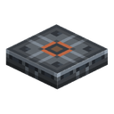
Charging Station
A plate that charges everything powered on the player standing on it — inventory, offhand and worn gear alike — without asking for a single click.
LV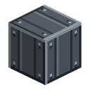
Energy Condenser
Catches the grid's surplus and packs it into an energy clot; which tier you get is decided by when you take it.
LV
Reinforced Energy Storage
The MV storage block — holds 100 000 EU/FE, five times the starter buffer, and moves it four times faster at 128 EU/FE/tick.
MVBattery Box
The starter LV storage block — holds 20 000 EU/FE, banks surplus from a generator and feeds it to machines at 32 EU/FE/tick.
LV
Energy Transfer
8
Tin Cable
The cheapest nearly-lossless LV cable; while energy is actually flowing, the bare wire shocks players on contact.
LV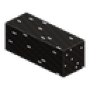
Insulated Tin Cable
A rubber-sheathed tin LV cable with minimal loss and complete immunity to contact shock.
LVCopper Cable
A cheap workhorse LV cable; the bare wire shocks players while it is live off a powered grid.
LV
Insulated Copper Cable
A rubber-sheathed copper LV cable with half the loss and complete immunity to contact shock.
LV
Gold Cable
A wide bare MV cable with high loss and a serious contact shock while energy is actually flowing.
MV
Insulated Gold Cable
A rubber-sheathed gold MV cable with half the loss and complete immunity to contact shock.
MV
Electrum Cable
A bare HV cable of electrum ingots with a diamond-dust core — the ladder's widest wire and its lowest losses, at the price of an expensive craft.
HV
Insulated Electrum Cable
A rubber-sheathed electrum HV cable: the lowest loss in the mod and complete immunity to contact shock.
HV
Nuclear
12
Reactor Controller
The brain of a reactor room: it scans the shell, says what is wrong with it and shows exactly where — as a status line and a puff of smoke at the fault.
HV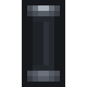
Fuel Rod Cladding
A fuel rod's casing with no uranium in it: crafted 3x3, filled with a single piece of enriched uranium, and handed back by the column once the rod is spent.

Steam Nozzle
The far end of the cooling loop: it takes steam from a pipe, releases it into the air as a plume and destroys it — 100 mB/t per nozzle.
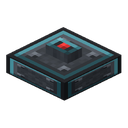
Reactor Button
A button made of shielding alloy: the way to pulse the airlock from inside a sealed room, built exactly like a vanilla button but able to survive what the room is for.

Reactor Column
A transparent rack for four rods with two tanks — water and steam: filled by right-clicking, it wears every fuelled rod down together, and both the fuel and the coolant level read from across the room, with no menu at all.
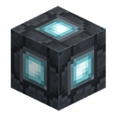
Reactor Lamp
A shell block that lights up only once the room is formed: the only source of light inside a sealed box, and at the same time a visible outside sign that the build was accepted.

Reactor Casing
A shielding-alloy panel — the only material a reactor room's sealed shell may be built from.

Reactor Glass
A transparent shell panel: it counts as wall exactly like casing, but no more than 30 % of a shell may be glass — past that the room stops being containment and becomes a display case.

Reactor Inlet
The one place fluid may cross a sealed shell: a 50 mB/t crossing that works both ways — water in, steam out — and is still a full piece of wall.

Reactor Outlet
A socket set into the reactor room's shell: the controller is walled in and has no face a cable can reach, so power leaves through a purpose-built piece of wall — a 512 EU/FE buffer that gives on every face and is topped up by the controller.
HV
Fuel Rod
The reactor's fuel: enriched uranium in an iron sleeve on a shielding base. It holds 144,000 EU/FE, shows what is left of it as durability, and leaves an empty casing behind when it burns out.
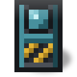
Reactor Airlock Door
The only way into a reactor room: it opens on a redstone pulse alone, shuts itself two seconds later, and never closes through whoever is standing in the doorway.

Machines
15
Iron Furnace
An upgraded fuel furnace between vanilla and the Electric Furnace — faster than vanilla, still fuel-based, no EU/FE.
LV
Sawmill
Saws any wood into planks, sticks, slabs or stairs at a higher yield than hand-crafting. Four switchable modes, runs on EU/FE.
LVMacerator
Crushes ore (both blocks and raw ore) into two dusts, spending EU/FE at the LV tier.
LV
Compressor
Squeeze raw materials into denser forms — metal dust into ingots, coal/gem dust back into items, ice into packed/blue ice, sugar cane into paper. Closes the doubling loop for non-metals.
LV
Extractor
Pulls useful material out of raw inputs — ×2 dye from flowers, more seeds from pumpkin/melon, blaze powder from rods, flint from gravel. Handy for hopper-fed auto-farms.
LV
Electric Furnace
Smelts everything the vanilla furnace does, plus the mod's dusts into ingots. Runs on EU/FE instead of fuel.
LV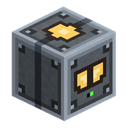
Alloy Smelter
An LV machine with three interchangeable input slots that melts several metals into one alloy. Loading order does not matter; copper, tin, iron, nickel, gold and silver become bronze, invar, cupronickel and electrum.
LV
Electric Heater
An LV support block that sits under the Vulcanizer. It has to warm up first; once hot it gives the maximum x3 heat. While cold it is not a heat source at all.
LV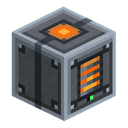
Polymerizer
Boils oil down into raw rubber — a ten-bucket tank, one bucket per run. The rubber is then combined with sulfur in a Vulcanizer.
LV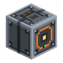
Vulcanizer
An LV machine that combines raw rubber with sulfur dust to make rubber. It needs EU/FE and heat from below; a stronger heat source increases the output.
LV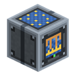
Galvanic Bath
An LV electroplating machine: it turns fibre and silver dust into flux thread in a water bath — the way into the Fluxweave line and the EU/FE armour.
LV
Assembler
Continuously stamps out crafting-table recipes from blueprints for EU/FE, pulling materials from its own modular storage. Holds a queue of three blueprints.
MV
Canning Machine
An LV machine that renders any food down to identical rations. Rations stack together no matter what they were made from, so a dozen slots of assorted scraps collapse into one.
LV
Component Repair Bench
Restores a worn wind mill rotor or water mill wheel for one item and some EU/FE — but every repair permanently lowers that part's durability ceiling.
LV
Thermal Centrifuge
An LV machine with a spin-up: a redstone signal brings the rotor up to speed, and a hot heater below lets it split uranium dust in two — the second ore doubling after the macerator.
LV
Fluid Machines
2Pump
An LV pump that drains fluid from the world or adjacent tanks into its 10-bucket internal tank and pushes it on to receivers; exchanges fluid with capsules and other mods' containers.
LV
Distillation Column
A 1×1×3 tower that fractions crude oil into diesel and fuel oil. The mod's first multiblock — hand-assembled from three segments; the light fraction leaves at the top, the heavy one at the bottom, and the base keeps its fluids through disassembly.
LV
Item Transport
1

Fluid Transport
1
Fluid Storage
1
Materials
17
Tin Ore
An early mod metal — ore in the world and the raw → dust → ingot chain; the base material for LV wires and circuits.

Sulfur Ore
Native sulfur — a mineable non-metal processed into dust for rubber vulcanization.
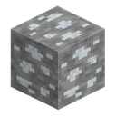
Silver Ore
A rare mod ore metal — ore block and the raw → dust → ingot chain; the material for mid-tier circuits and components.

Nickel Ore
The rarest of the mod's metals — ore in the world and the raw → dust → ingot chain; the material for MV alloys and machine casings.
Uranium Ore
The mod's rarest ore — mined with an iron pickaxe, processed into dust and ingot; already goes into the torch, teleporter and incubator, and later into nuclear machines.

Palladium Ore
The mod's only Nether ore — hidden in netherrack, basalt and blackstone, requires a diamond pickaxe, and processes into dust, ingot and plate.

Oil
A liquid fossil resource — finite lakes in the world, collected with a bucket, a capsule or a pump; viscous, flammable, and the start of the rubber chain.

Bronze Ingot
The bulk copper-tin alloy — three copper ingots plus one tin ingot give two bronze ingots in the alloy smelter.

Cupronickel Ingot
A one-to-one copper-nickel alloy made a single ingot at a time — the cheapest way, by materials, to put nickel to work.

Invar Ingot
A one-at-a-time iron-nickel alloy — two iron ingots plus one nickel ingot give a single invar ingot in the alloy smelter.

Electrum Ingot
The mod's most expensive alloy by materials — one gold ingot and one silver ingot give a single electrum ingot in the alloy smelter.

Block of Tempered Iron
A compact block of 9 tempered-iron ingots — stores the metal in one slot and is crafted or uncrafted at a workbench with no loss.

Tempered Iron Plating
A decorative block of 4 tempered-iron plates — a tech panel with a screen and lines; crafted and uncrafted at a workbench with no loss.

Silver Plating
A decorative block of 4 silver plates — a bolted 2x2 metal tile; crafted and uncrafted at a workbench with no loss.
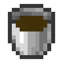
Diesel
The light fraction of oil distillation — a golden-yellow fluid, the column's target product. Future fuel of the liquid fuel generator (12 EU/FE/t).

Fuel Oil
The heavy residue of oil distillation — a thick dark-brown fluid. Weaker fuel than diesel (6 EU/FE/t), but nothing goes to waste — it all burns.
⚡
Steam
The working fluid of the reactor room. The one mod fluid with no world form at all: no pool, no block, no bucket — steam lives only inside tanks and pipes.

Agriculture
3
Trellis
A two-block-tall support for climbing plants — cotton grows on it today. Placed on moist farmland, seeded by right-click. The plant roots slowly once, then fruits in an endless cycle: harvesting never destroys it.

Garden Drone Station
An LV EU/FE-buffered station from which a BER-drawn drone lifts off and patrols farmland within a 9-block radius — tilling free dirt, planting seeds, fertilizing immature crops, and hauling ripe harvest back to the station.
LV
Incubator
A 1×2 multiblock — mechanical base plus a glass dome. Mutates items by uranium irradiation and EU/FE: duplicates, transforms or creates new ones. Mode set by a chip, outcome is probabilistic with four rarity grades.
LV
Advanced Machines
1
Utility
14Iron Chest
A 36-slot chest — one row more than vanilla, with a 3D model, animated lid and its own sound. Needs no energy.

Silver Chest
A 45-slot chest — the tier above iron (one more row), with a 3D model and animated lid. Needs no energy.

Gold Chest
A 54-slot chest — the tier above silver (one more row), with a 3D model and animated lid. Needs no energy.

Electrum Chest
An 81-slot chest — the tier above gold. Nine rows behind a six-row window with a scrollbar. Needs no energy.

Storage Module
A 27-slot storage block: modules placed against each other work as one warehouse of up to 108 slots behind one window.

Stock Display Frame
A frame you hang on a chest — it shows the item count inside, right on the frame. No energy needed; the number is only visible with a filter item placed in the frame.
LV
Enriched Uranium Torch
A decorative torch with a green flame and light level 14 — it even burns underwater. Needs no energy.

Industrial Workbench
The Industrialist villager's job-site block — a buyer of the mod's resources for emeralds. Place it near an unemployed villager and he takes the profession.
Guide Book
An in-game tutorial book covering every mechanic of the mod — auto-given on a player's first join, opened with a right-click; tabs, pages, links. No energy.

Player Profile
A profile screen with career mod statistics and a mastery progression (40 levels, 8 ranks) that levels up from machine work and, far more slowly, from generator output.

Chests/Spawn Bonus Chest
When 'Bonus Chest' world option is on, Ala Industrial starter items are injected into the bonus chest on top of the vanilla loot.

Large Mob Repeller
The top guard-field tier — a 24-block radius at 64 EU/FE/t; grown from the medium one with a Soul Vessel.
HV
Small Mob Repeller
A guard EU/FE-field — while powered, hostile mobs flee an 8-block radius and cannot approach. Grows into the medium and large tiers via the Soul Vessel.
LV
Medium Mob Repeller
The second guard-field tier — a 16-block radius at 32 EU/FE/t; grown from the small one with a Soul Vessel.
MVUpgrades
3
Overclocker Chip I
A three-tier upgrade: each tier shortens the operation and doubles the energy draw. Made from energy clots.

Statistics Chip
An upgrade that makes a machine keep a record of its work — time, energy and items processed.
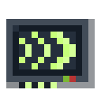
Mute Chip
An upgrade that fully silences a machine — goes into the upgrade slot.

Components
20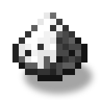
Iron Dust
Dust and related intermediates (plate, billet) — what the Macerator and other machines turn ores into.

Tempered Iron
An ingot smelted from a vanilla iron ingot — the base material for the mod's tools, armor and block.

Iron Gear
The gear family — stone, iron, gold and silver; crafting components for machinery still to come.
Electronic Circuit
The base crafting component — the 'brain' of nearly every LV machine and storage block.

Machine Casing
A full-cube base block for building machines — from 8 iron plates. LV machines (macerator, extractor, compressor) are crafted on top of it.

Copper Coil
A crafting component — copper cable wound on a tin core; gates the Electric Drill.

Battery
The first EU/FE carrier — a 2 000 EU/FE rechargeable battery that stacks by charge level and gives its energy back to the grid or to another item.
LV
Water Wheel
Water mill wheel — placed in the wheel slot of a water mill; without it, no generation. Three grades: a better wheel makes more EU/FE and lasts far longer. Wears out while generating.

Wooden Rotor
Wind turbine blades — placed in the rotor slot of any T1/T2 wind mill; without it, no generation. Three grades: a better rotor makes more EU/FE and lasts far longer. Wears out while generating.

Network Analyzer
A hand-held diagnostic tool — right-click a cable to view that power network's stats and highlight it in the world.

Empty Chip
The blank base for machine upgrade chips; has no effect on its own.

Solar Evolution Chip
A pair of evolution chips — solar (day) and lunar (night) — that evolve basic T1 solar panels and wind mills into T2 via evolution, carrying accumulated NBT energy over.

Rubber
A material made from oil and sulfur — the Polymerizer makes raw rubber, then a heated Vulcanizer turns it into rubber.
LV
Advanced Circuit
The MV tier of the circuit — the base board rewired with gold and sealed in rubber.
MV
Advanced Machine Casing
A full-cube base block for MV machines — a plain casing with two advanced circuits, clad in 6 tempered-iron plates.
MV
Duplication Chip
Three chips set the Incubator's mode — duplicate, transform or create. They are never consumed, but without one the machine will not start.

Resonant Shard
Materials only the Incubator yields: the four first rungs of the evolution ladders, plus depleted uranium and irradiated slag.
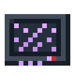
Random Jump Chip
The Spatial Crystal, the Resonance Coil and the Random Jump Chip — three steps that unlock the teleporter's random jump.

Energy Clot I
Three tiers of clots — the grid's surplus, frozen solid by the Energy Condenser. The only ingredient overclockers are made of.
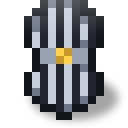
Fluxweave Cloth
The EU/FE armour intermediates: thread is plated in the Galvanic Bath, four threads make one bolt of cloth — and cloth is what repairs the finished set.

Items
22
Forge Hammer
A pre-machine hand tool: put the hammer and an ingot on the crafting grid to get a metal plate. The hammer stays in the grid and loses 1 durability per plate.

Wrench
Configures Item Pipe faces and dismantles the mod's blocks.

Tempered Iron Pickaxe
A hand-held tempered-iron pickaxe — slightly better than vanilla iron in every stat, but it cannot mine diamond-level blocks.
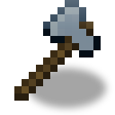
Tempered Iron Tools
A set of five hand tools made of tempered iron — pickaxe, axe, hoe, shovel and sword; slightly better than vanilla iron, but they cannot mine diamond-level blocks.

Tempered Iron Chestplate
A full tempered-iron armor set — helmet, chestplate, leggings and boots; tougher than iron, repaired with tempered iron.

Scythe
An AOE tool that clears leaves, grass, flowers and other decorative foliage in a single swing, and with Shift held — an AOE sickle that harvests ripe crops. Harvesting has a chance to yield an extra seed, and that chance grows with the scythe's tier. Eight material tiers from wood to netherite.

Battery Pouch
A chargeable item pouch — holds 128 weight, runs on a built-in 2000 EU/FE battery and locks when it runs out of charge.
LV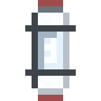
Vacuum Capsule
A stackable one-bucket fluid container — up to 16 capsules of one fluid per stack, filled from the world or the mod's tanks.
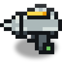
Electric Drill
A rechargeable diamond-tier pickaxe that runs on EU/FE — mines like diamond while charged, spends EU/FE per block, never breaks.
LV
Electric Shovel
A rechargeable EU/FE-powered shovel — digs earth, sand and gravel while charged, spends EU/FE per block, never breaks.
LV
Electric Chainsaw
A rechargeable EU/FE-powered axe — cuts wood and leaves while charged, spends EU/FE per block, never breaks.
LV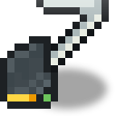
Electric Hoe
A rechargeable EU/FE-powered hoe — tills farmland and breaks hay, leaves and moss faster than a diamond one, spending 50 EU/FE per use; never breaks.
LV
Electromagnet
An EU/FE-rechargeable item in any inventory slot that draws nearby loose drops toward the player, spending EU/FE per item.
LV
Energy Pack
A wearable EU/FE buffer in the chest slot — 20 000 EU/FE that keeps the powered items in your inventory topped up.
LV
Jetpack
A chest-slot EU/FE flight device — thrust while jump is held, a soft powerless glide when drained.
LV
Fluxweave Chestplate
The mod's first full EU/FE armour set — Fluxweave helmet, chestplate, leggings and boots; charge switches on a utility kit without ever switching protection off.
LV
Wind Gauge
Measures the wind speed where the player stands, for picking a wind mill's height.

Teleporter Remote
A handheld beacon-remote — binds to a teleporter station via shift-right-click and triggers a jump to it for EU/FE paid by the station.
LV
Insulated Chestplate
Leather armour dipped in slime — hood, jacket, trousers and boots that soak up a bare cable's shock and spend durability doing it.

Soul Vessel
A soul reservoir that upgrades the Mob Repeller — filled only by the player's own hostile-mob kills; a full vessel is consumed to evolve the block.

Shielding Chestplate
The anti-radiation set — hood, jacket, trousers and boots of leather, rubber and yellow dye; it cuts the dose, spends durability doing it, and seals the wearer completely.

Electric Saber
A rechargeable EU/FE melee weapon — 12 damage and a block of extra reach while the blade is lit; 100 EU/FE per hit, and the discharge staggers the target. Shift-right-click switches it off; it never breaks.
LV